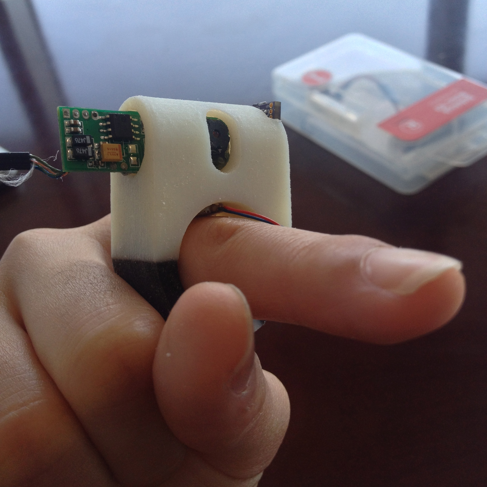

"Helping the blind read text on the go."
The FingerReader makes it possible
The FingerReader is a text-reading assistive device for the blind. It is designed to be a portable device that can assist blind people to read and scan text in everyday situations.
With just the point of a finger, visually impaired users can have menus, books, forms, and so much more read to them in real time. The device allows the user the freedom to read full paragraphs, scan through lines to identify content of interest, and navigate through multiple pages and types of text with ease.
The device provides vibration and tonal feedbacks to help guide the user through a page of text. A vibration signal is triggered at the beginning and end of every line, and tones help alert the user whenever he or she strays off of the line.

The ring is a dual-material 3D printed device that allows for sizing adjustments and vibration dampening using a rubbery material on both sides of the ring. Through multiple user studies with blind and visually impaired participants, the design was tailored to maximize user comfort and distinguishability of haptic feedbacks. An on-board microcontroller was programmed to enable vibration feedbacks and LEDs for reading in dark areas. A camera on the device streams a video of the text in view to be processed and translated from text to speech so blind users can hear exactly what is on the page in front of them.